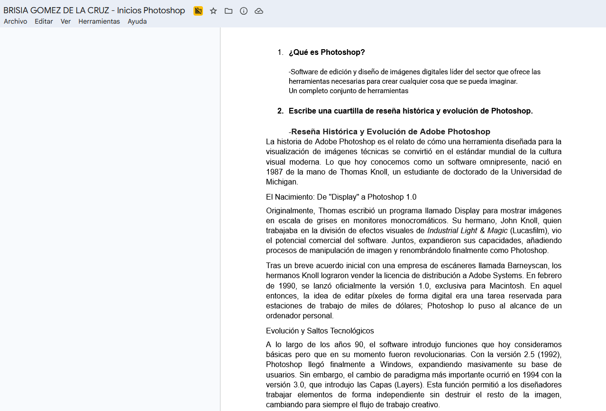
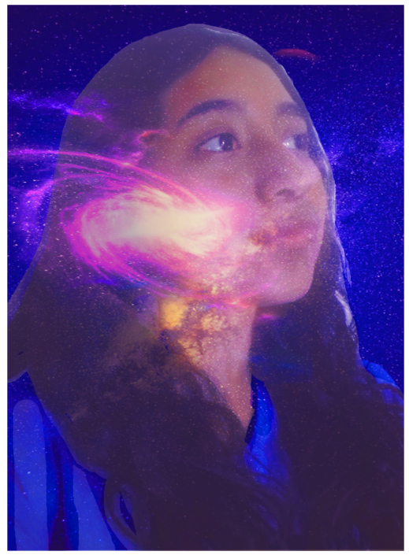

3ER PARCIAL

Participación 2: Conociendo Photoshop
Photoshop es una herramienta multidisciplinaria. No importa si mi enfoque es el arte, la publicidad o la tecnología, dominar este software es una habilidad básica para cualquier diseñador moderno. Entendí que cada una de estas áreas aprovecha funciones específicas, desde el pincel corrector hasta la línea de tiempo, para lograr resultados de alta calidad.
Ver PDF
Práctica 6: Restauración de fotografía
La práctica demostró la importancia de la postproducción digital en el ámbito de la comunicación visual, destacando cómo el uso analítico de las herramientas de Photoshop permite elevar la calidad estética y técnica de un archivo fotográfico con estándares profesionales. Asimismo, el ejercicio permitió comprender que la edición digital no se limita a la alteración superficial de una imagen, sino que constituye un proceso riguroso de toma de decisiones técnicas y estéticas. A través de la manipulación precisa de texturas, luces y sombras, se logró mejorar la narrativa visual del archivo sin comprometer su veracidad, desarrollando así una habilidad crítica y metodológica fundamental para el diseño, la publicidad y las artes visuales contemporáneas.
Ver PDF
Práctica 7: Aplicar color a Fotos Antiguas
Esta práctica evidenció cómo la edición digital permite la reinterpretación histórica y estética de un archivo fotográfico. A través del manejo analítico de las capas y los modos de fusión, se demostró que la colorización digital no es un proceso de "pintado" superficial, sino una integración físico-visual donde se respeta la volumetría y la iluminación original de la toma, adquiriendo competencias clave para la restauración digital, el diseño conceptual y la postproducción profesional.
Ver PDF
Práctica 8: Retoque de Piel (Eliminación de imperfecciones)
Con esta práctica quedó claro que retocar un retrato no se trata de borrar por completo la esencia de una cara, sino de hacer mejoras sutiles y bien pensadas. El verdadero reto como editor es encontrar el equilibrio perfecto entre limpiar las imperfecciones y cuidar que la piel se siga viendo real y con textura, algo que se usa muchísimo en la fotografía de moda, las revistas y la publicidad actual. Además, el ejercicio nos hace pensar en lo importante que es no exagerar con la edición, al final del día, el mejor retoque es el que no se nota, logrando que la persona se vea genial pero natural, sin que parezca que le pusimos un filtro de plástico.
Ver PDF
Práctica 9: Estilización de Figura (Herramienta Licuar)
Esta práctica nos enseñó que la edición estética en Photoshop requiere mucha precisión y control. Modificar una silueta de forma realista no es solo mover pixeles al azar, sino entender las proporciones del cuerpo y cuidar el entorno de la foto. Al final, aprendimos que en el retoque profesional la sutileza es lo más importante: el cambio debe mejorar la imagen, pero el secreto está en que nadie note que el filtro Licuar fue utilizado. Además, nos ayudó a desarrollar un ojo mucho más crítico, ya que para lograr un buen resultado hay que estar súper atentos a los detalles del fondo, como las líneas rectas o las texturas, que son las que delatan una mala edición. Esta técnica nos da una base súper sólida para entender cómo se trabaja la imagen en el mundo de la publicidad y los medios digitales, donde el control técnico y el respeto por la anatomía van de la mano.
Ver PDF


Participación 3: El Arte del Retoque Fotográfico y la Ética Visual
Esta práctica nos demostró que el diseño digital no solo requiere destreza técnica frente a la computadora, sino también una gran responsabilidad social. Aprender a usar herramientas poderosas como la Separación de Frecuencias nos da la capacidad de mejorar la calidad visual de cualquier proyecto, pero la investigación nos recuerda que el verdadero reto es saber cuándo detenerse para no perder la autenticidad humana. Además, el formato de video nos obligó a salir de la pantalla de Photoshop para convertirnos en comunicadores; tuvimos que traducir conceptos muy técnicos a un lenguaje digerible y dinámico para redes sociales. Al final, la actividad nos deja claro que los futuros creadores de contenido y diseñadores no solo debemos dominar el software, sino también desarrollar un criterio ético firme para usar la tecnología como una herramienta de mejora estética y no como un medio para crear falsas expectativas en la sociedad.
Ver PDF

Participación 4: El Flujo de Trabajo Profesional (Destructivo vs. No Destructivo)
Esta actividad nos enseñó que trabajar de forma no destructiva no es solo una cuestión técnica, sino de eficiencia y supervivencia profesional. En el mundo real del diseño, los clientes o profesores siempre piden cambios de última hora; dominar las máscaras y los objetos inteligentes nos da la flexibilidad de corregir proyectos en segundos. Además, el reto de hacer el tutorial nos ayudó a sintetizar ideas complejas en tips rápidos y atractivos para redes sociales. Al mismo tiempo, este ejercicio nos hizo ver que crear un buen contenido educativo requiere dominar el tema por completo; no puedes enseñar un "Modo Pro" si no entiendes bien el porqué detrás de la herramienta. Al final, nos llevamos una lección súper valiosa: un buen diseñador no es el que edita más rápido, sino el que estructura su archivo de forma tan limpia e inteligente que cualquier cambio se vuelve un juego de niños, manteniendo siempre un estándar de calidad impecable.
Ver PDF


Participación 5: Fotocomposición y Modos de Fusión
Esta actividad nos enseñó que un buen fotomontaje no depende de recortar bien un objeto, sino de saber integrarlo con su nuevo entorno a nivel físico y óptico. Dominar las familias de los Modos de Fusión nos da un control tremendo para mezclar texturas y efectos de luz en segundos. Además, el ejercicio del video nos ayudó a desarrollar un ojo mucho más observador y analítico, algo indispensable para entender cómo se construye la magia visual en la industria del cine, los videojuegos y la publicidad profesional. Asimismo, la práctica nos hizo conscientes de que la luz y el color son los hilos conductores que le dan credibilidad a una mentira visual; si logras que la iluminación de un elemento recortado responda al ambiente de su fondo, el cerebro del espectador acepta la imagen como real en automático. Al final, este ejercicio no solo mejoró nuestras habilidades en Photoshop y edición de video, sino que nos demostró que para ser un buen creador visual primero hay que aprender a observar detalladamente cómo funciona el mundo real.
Ver PDF
Práctica 10: Collage Surrealista / Pop Art "Mi Mente en Capas"
Esta actividad nos demostró que el diseño digital es una herramienta poderosísima para la libre expresión y la narrativa personal. Más allá de dominar los comandos técnicos de selección o las máscaras en Photoshop, el verdadero reto fue compositivo: lograr que una estética caótica y llena de elementos como el Pop Art o el Surrealismo tuviera un orden visual, equilibrio y un mensaje claro sobre quiénes somos, uniendo el arte digital con la psicología de la imagen. Al mismo tiempo, este proyecto nos obligó a vernos a nosotros mismos desde otra perspectiva, traduciendo ideas abstractas como nuestros gustos, metas o miedos en elementos gráficos concretos. Experimentar con texturas de papel rasgado, tipografías y modos de fusión nos enseñó que las reglas del diseño están para romperse de forma inteligente; el caos visual también puede ser estético si se sabe estructurar. En conclusión, la práctica fue el cierre perfecto porque nos demostró que Photoshop no es solo un programa para corregir fotos de catálogo, sino un lienzo infinito para plasmar nuestra propia identidad con un sello único y profesional.
Ver PDF
Practica 11: Fotomontaje "Tú en un Mundo Extraño" (Doble Exposición o Integración Surrealista)
Esta práctica nos enseñó que la credibilidad de un fotomontaje fantástico no depende de qué tan realista sea el escenario, sino de qué tan bien aplicamos las leyes de la física óptica dentro del programa. Entender que elementos como una sombra de contacto, la temperatura de la luz o una máscara bien difuminada son los que engañan al ojo humano, nos da un control creativo impresionante para materializar cualquier idea, fusionando la técnica digital con la dirección de arte y el diseño conceptual de nivel profesional.
Ver PDF